电力工业·前期HSK本地补丁×2上游补丁×3代钢级·电力工业·黄铜CupronickelAlloy
代钢级可塑成品 944 件:家具建筑651 · 防具142 · 穿戴件40 · 近战工具96 · 远程武器7 · 其它8
金属全谱469 + 常规硬性件328 + 重机电(舱体/发电机/扫描仪)143 + 耐腐蚀设备4
顶替 整档替到 代钢级·中世纪·青铜(940 件基准,含其下全部金属);比钢 +4/−1 件 —— 做不了 无菌瓦屋顶;钢做不了它能做 化学工作站、水冷装置…
① 起点 · Core_SK 的 Defs 写 Things/Item/Ingot (210,140,20)
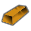
ACore_SK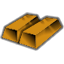
BCore_SK CCore_SK
CCore_SK② Vile 换成 Things/Item/Material/Brass (221,206,94) ← Alloys_Industrial_NonFerrous.xml
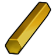
aVile's Materials Science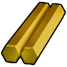
bVile's Materials Science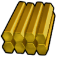
cVile's Materials Science③ 生效(终态) Things/Item/Ingot (210,140,20) ← 10_Vile贴图还原.xml
 ACore_SK
ACore_SK BCore_SKCCore_SK
BCore_SKCCore_SKThings/Item/Ingot StackCount (210,140,20)(221,206,94)贴图链 3 段
护甲 1.10/0.80/0.04 利钝 0.80/1.50 价值 10 质量 0.40 Bulk 0.35
stuff CorrosionResistant, Metallic, RuggedMetallic, StrongMetallic
HSK HCMBar, SLDBar
产自 Make brass x25(感应炉/Metal processing II) ; Smelt melchior alloy(无工作台)
源 Core_SK
Items_Resource_Alloys_Industrial.xml
电力工业·前期HSK本地补丁×1上游补丁×3代钢级·电力工业·不锈钢FerrosiliconAlloy
代钢级可塑成品 944 件:家具建筑651 · 防具142 · 穿戴件40 · 近战工具96 · 远程武器7 · 其它8
金属全谱469 + 常规硬性件328 + 重机电(舱体/发电机/扫描仪)143 + 耐腐蚀设备4
顶替 整档替到 代钢级·中世纪·青铜(940 件基准,含其下全部金属);比钢 +4/−1 件 —— 做不了 无菌瓦屋顶;钢做不了它能做 化学工作站、水冷装置…
① 起点 · Core_SK 的 Defs 写 Things/Item/Ingot (131,137,147)
 ACore_SK
ACore_SK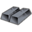
BCore_SK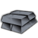
CCore_SK② Vile 换成 Things/Item/Material/StainlessSteel (225,233,255) ← Alloys_Industrial_Ferrous.xml
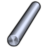
aVile's Materials Science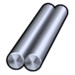
bVile's Materials Science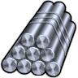
cVile's Materials Science③ 生效(终态) Things/Item/Ingot (131,137,147) ← 10_Vile贴图还原.xml
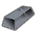
ACore_SK BCore_SK
BCore_SK CCore_SK
CCore_SKThings/Item/Ingot StackCount (131,137,147)(225,233,255)被1条配方消耗贴图链 3 段
护甲 1/0.80/0.11 利钝 1.13/1.24 价值 4 质量 0.35 Bulk 0.35
stuff CorrosionResistant, Metallic, RuggedMetallic, StrongMetallic
HSK SLDBar
产自 Smelt sendust alloy(金属提炼厂) ; Make stainless steel x30(感应炉/Metal processing III)
源 Core_SK
Items_Resource_Alloys_Industrial.xml